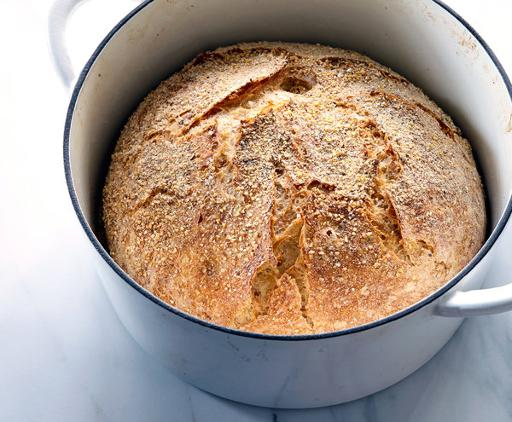

No Knead Bread

Description
Here is one of the most popular recipes The Times has ever published, courtesy of Jim Lahey, owner of Sullivan Street Bakery.
It requires no kneading. It uses no special ingredients, equipment or techniques. And it takes very little effort — only time.
You will need 24 hours to create the bread, but much of this is unattended waiting, a slow fermentation of the dough that results in a perfect loaf.
Ingredients
- 3 1/3 cups/430 grams all-purpose or bread flour, plus more for dusting
- Generous 1/4 teaspoon/1 gram instant yeast
- 2 teaspoons/8 grams kosher salt
- Cornmeal or wheat bran, as needed
Steps
- In a large bowl combine flour, yeast and salt.
- Add 1 1/2 cups/345 grams water and stir until blended; dough will be shaggy and sticky.
- Cover bowl with plastic wrap. Let dough rest at least 12 hours, preferably about 18, at warm room temperature, about 70 degrees.
- Dough is ready when its surface is dotted with bubbles. Lightly flour a work surface and place dough on it; sprinkle it with a little more flour and fold it over on itself once or twice.
- Cover loosely with plastic wrap and let rest about 15 minutes
- Using just enough flour to keep dough from sticking to work surface or to your fingers, gently and quickly shape dough into a ball.
- Generously coat a cotton towel (not terry cloth) with flour, wheat bran or cornmeal; put dough seam side down on towel and dust with more flour, bran or cornmeal.
- Cover with another cotton towel and let rise for about 2 hours. When it is ready, dough will be more than double in size and will not readily spring back when poked with a finger.
- At least a half-hour before dough is ready, heat oven to 450 degrees.
- Put a 6- to 8-quart heavy covered pot (cast iron, enamel, Pyrex or ceramic) in oven as it heats. When dough is ready, carefully remove pot from oven.
- Slide your hand under towel and turn dough over into pot, seam side up; it may look like a mess, but that is OK. Shake pan once or twice if dough is unevenly distributed; it will straighten out as it bakes.
- Cover with lid and bake 30 minutes, then remove lid and bake another 15 to 30 minutes, until loaf is beautifully browned.
- Cool on a rack